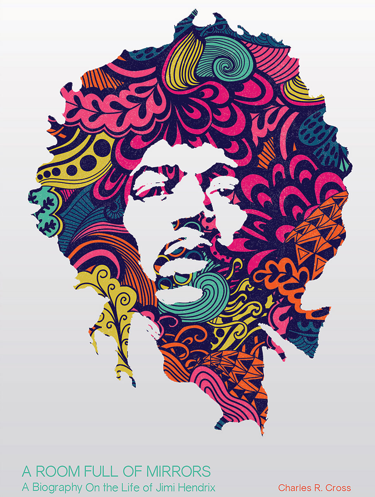
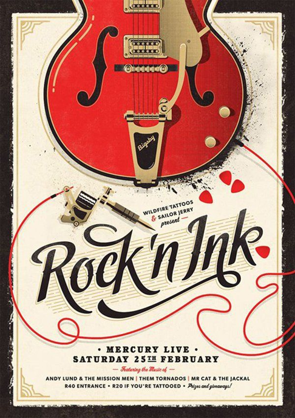

Art is a diverse range of human activities in creating visual, auditory or performing artifacts (artworks), expressing the author's imaginative, conceptual idea, or technical skill, intended to be appreciated for their beauty or emotional power. In their most general form these activities include the production of works of art, the criticism of art, the study of the history of art, and the aesthetic dissemination of art.
Art Disciplines
There are four major disciplines of art including performing arts, literary arts, visual arts, and multidisciplinary arts. The performing arts include dance, music, and theater, while the literary arts include drama and poetry. Most people are familiar with visual and performing arts. Visual arts include paintings, photographs, ceramics, and sculptures, among other kinds of art. Performing arts are typically what people think of when they think of the works of Shakespeare - people on the stage - as well as musical performances and dance
The literary arts are typically things to do with literature - such as writing books, creating pictographs, etc. Typography is an example of such an art form. The multidisciplinary arts combine the arts in some way. This means that something like a comic book has both visual art and literary art. Operas, for example, or Broadway plays do this - they combine music, dancing, and acting on the stage to create a new kind of experience for the viewer. Films or cinematography is a prime example of multidisciplinary arts because it includes performing arts (acting,) literary arts (scripts,) and visual arts (effects, set design.)
Until the 17th century, art referred to any skill or mastery and was not differentiated from crafts or sciences. In modern usage after the 17th century, where aesthetic considerations are paramount, the fine arts are separated and distinguished from acquired skills in general, such as the decorative or applied arts.
Though the definition of what constitutes art is disputed and has changed over time, general descriptions mention an idea of imaginative or technical skill stemming from human agency[7] and creation.[8] The nature of art and related concepts, such as creativity and interpretation, are explored in a branch of philosophy known as aesthetics.
Forms, genres, media, and styles
The creative arts are often divided into more specific categories, typically along perceptually distinguishable categories such as media, genre, styles, and form. Art form refers to the elements of art that are independent of its interpretation or significance. It covers the methods adopted by the artist and the physical composition of the artwork, primarily non-semantic aspects of the work (i.e., figurae), such as color, contour, dimension, medium, melody, space, texture, and value. Form may also include visual design principles, such as arrangement, balance, contrast, emphasis, harmony, proportion, proximity, and rhythm.
In general there are three schools of philosophy regarding art, focusing respectively on form, content, and context. Extreme Formalism is the view that all aesthetic properties of art are formal (that is, part of the art form). Philosophers almost universally reject this view and hold that the properties and aesthetics of art extend beyond materials, techniques, and form. Unfortunately, there is little consensus on terminology for these informal properties. Some authors refer to subject matter and content – i.e., denotations and connotations – while others prefer terms like meaning and significance.
Extreme Intentionalism holds that authorial intent plays a decisive role in the meaning of a work of art, conveying the content or essential main idea, while all other interpretations can be discarded. It defines the subject as the persons or idea represented, and the content as the artist's experience of that subject. For example, the composition of Napoleon I on his Imperial Throne is partly borrowed from the Statue of Zeus at Olympia. As evidenced by the title, the subject is Napoleon, and the content is Ingres's representation of Napoleon as "Emperor-God beyond time and space". Similarly to extreme formalism, philosophers typically reject extreme intentionalism, because art may have multiple ambiguous meanings and authorial intent may be unknowable and thus irrelevant. Its restrictive interpretation is "socially unhealthy, philosophically unreal, and politically unwise".
Finally, the developing theory of post-structuralism studies art's significance in a cultural context, such as the ideas, emotions, and reactions prompted by a work. The cultural context often reduces to the artist's techniques and intentions, in which case analysis proceeds along lines similar to formalism and intentionalism. However, in other cases historical and material conditions may predominate, such as religious and philosophical convictions, sociopolitical and economic structures, or even climate and geography. Art criticism continues to grow and develop alongside art.
Learn More